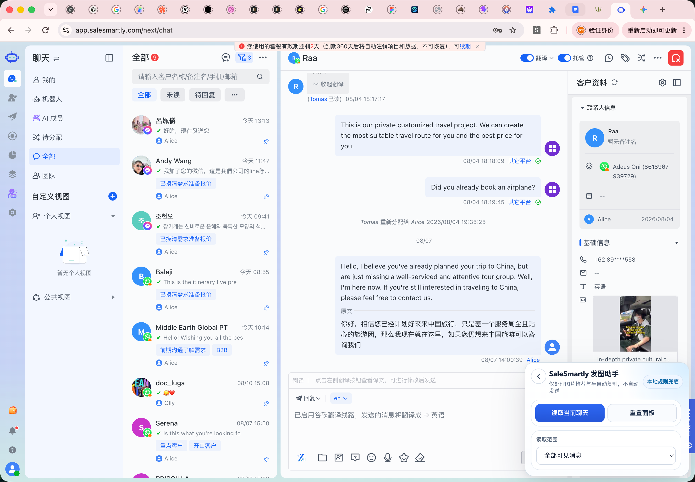
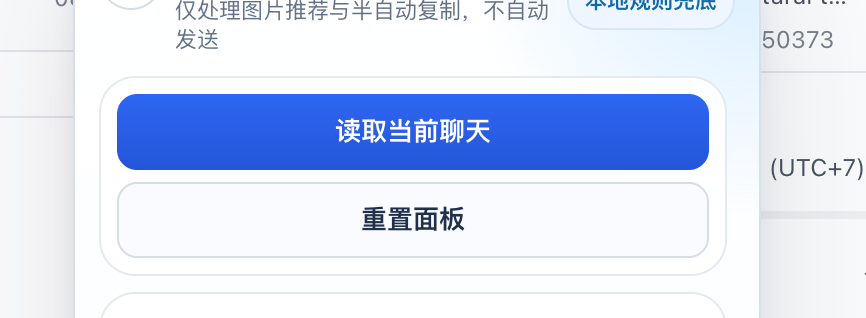
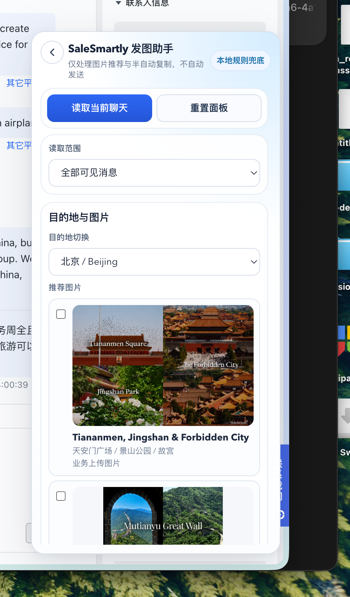

发图插件操作说明
更新时间：2026-08-11
1. 插件用途
这个插件只做一件事：
- 根据客户聊天内容识别目的地关键词
- 推荐对应目的地图片
- 由业务手动勾选图片
- 逐张复制到剪贴板
- 手动粘贴到 SaleSmartly 对话框
当前版本不做：
- 不自动发送
- 不区分
family / senior / general
- 不区分语言标签
- 不自动把多图塞进待发送区
2. 安装方式
- 拿到压缩包
发图插件.zip
- 解压到本地文件夹
- 打开 Chrome，进入
chrome://extensions/
- 打开右上角“开发者模式”
- 点击“加载已解压的扩展程序”
- 选择解压后的插件文件夹
3. 初始界面
插件默认停靠在页面右下角。

4. 正常使用流程
第一步：打开目标客户聊天
进入 SaleSmartly 的目标客户会话页面，确认当前聊天窗口里有客户真实消息。
第二步：点击“读取当前聊天”
插件会根据当前聊天内容识别目的地，并显示推荐图片。

第三步：查看识别结果和推荐图片
识别成功后，面板会展开并显示目的地切换、推荐图片列表、图片勾选框和复制按钮。

第四步：勾选需要发送的图片
业务只需要勾选本次要发给客户的图片即可。
第五步：点击“复制所选内容”
插件会先复制第一张已勾选图片到剪贴板。然后业务回到 SaleSmartly 输入区，Mac 用 Cmd + V，Windows 用 Ctrl + V。
5. 目的地切换
如果插件识别结果不准确，可以手动切换目的地下拉框。
6. 面板拖动规则
面板支持手动拖动，默认停靠在右下角，缩回后会尽量保持底部贴住原位置。
7. 推荐操作习惯
- 打开客户聊天
- 点击
读取当前聊天
- 核对目的地
- 勾选图片
- 点击
复制所选内容
- 到输入框手动粘贴
- 如有多张，继续
复制下一张已勾选图片
8. 常见问题
- 为什么没有自动发送？当前版本只负责“识别和发图辅助”。
- 为什么一次不能直接把多张图都贴进去？当前稳定方案仍然是逐张复制、逐张粘贴。
- 识别错了怎么办？直接手动切换目的地即可。
- 面板挡住了客户信息怎么办？直接拖动面板到不遮挡的位置。